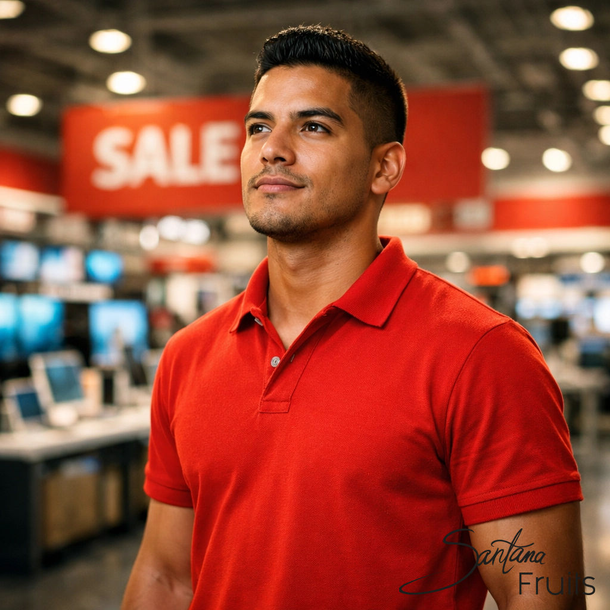

Erinnerst du dich an den Moment im Saturn-Markt 2009? Dieser Blitzschlag? Falls du ihn verpasst hast, lies ihn hier nach: 2009 im Saturn – Der Moment, der meine Reise nach Hause auslöste.
Mein Kopf war voll mit Visionen von Kaffeebohnen, Avocados und dem Erbe meiner Familie in der Dominikanischen Republik. Ich wollte sofort loslegen. Aber mein Instinkt sagte mir: „Kenny, Leidenschaft ist der Motor, aber Struktur ist das Getriebe. Ohne Getriebe bringst du die Kraft nie auf die Straße."
In der Startup-Welt hört man oft „Just do it". Im internationalen Agrarhandel ist das ein Rezept für ein Desaster. Wenn du Lebensmittel über Ozeane bewegst und mit Zollbehörden zu tun hast, reicht „Wollen" nicht aus. Du musst „Wissen".

Mir war klar: Wenn ich Santana Fruits wirklich zu einem professionellen Partner für den europäischen Einzelhandel machen wollte, brauchte ich ein Fundament wie einen Betonpfeiler. Ich wollte ein Unternehmer sein, kein Träumer.
Dieser Abschluss ist die perfekte Brücke zwischen Praxis und Theorie. Es ging mir um das Verständnis von Handelsdynamiken:
Während andere reisten, saß ich über Büchern zu Handelsrecht und BWL. Professionalität ist kein Zufall, sondern das Ergebnis von Systemen.
Bei Santana Fruits meinen wir nicht nur den Geschmack einer Avocado, sondern den gesamten Prozess dahinter. Eine saubere Buchhaltung und klare Verträge sind die Basis für Freiheit. Nur wer seine Zahlen kennt, kann mutige Entscheidungen treffen.
Ich habe gelernt, wie wichtig es ist, Verantwortung zu übernehmen – für die Qualität, für die Menschen und für die Partner. Ein wichtiger Teil war auch das Thema Führung. Ich wusste, ich musste eines Tages Farmer in der DR überzeugen und Partner in Deutschland gewinnen. Dafür braucht man Kompetenz.

Bei Santana Fruits ist unser Auftreten bewusst professionell. Ein Supermarktleiter braucht jemanden, der seine Prozesse im Griff hat. Struktur steht immer an erster Stelle. Das ist unser Versprechen: Wir liefern nicht nur Früchte, wir liefern Sicherheit.
Unterschätze niemals die Macht der Struktur. Leidenschaft bringt dich an den Start, aber Disziplin bringt dich ins Ziel. Ohne dieses Fundament wäre Santana Fruits heute nicht das, was es ist.
In der nächsten Episode fliegen wir gemeinsam in die Dominikanische Republik. Die erste Reise zurück nach fast 20 Jahren. Bist du bereit für den Moment, in dem Theorie auf die Realität der roten Erde trifft?
Bis bald,
Kenny
CEO, Santana Fruits